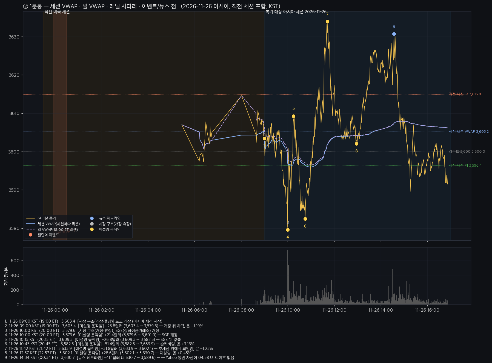
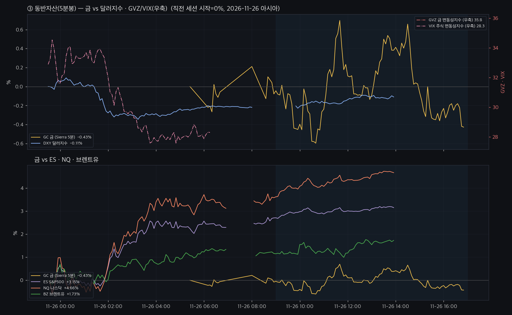
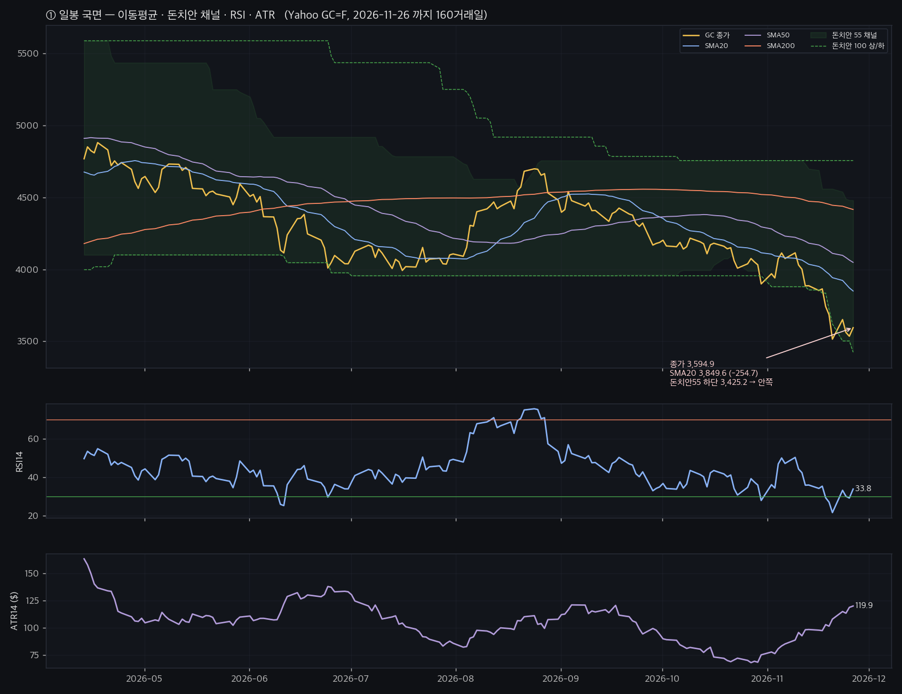

2026-11-26 아시아 세션 복기 (19:00~03:00 ET / 09:00~17:00 KST)
롤: 이 세션부터 근월물(front month)은 GCG27(COMEX Gold Feb 2027, COMEX 금 2027년 2월물)(11-26 거래량 GCZ26(COMEX Gold futures December 2026 contract, COMEX 금 선물 2026년 12월물) 2,446 vs GCG27 40,255계약, datacollect). 이 노트는 GCG27 1분봉 기준이다. 11-25 이전 노트(GCZ26)와 가격을 비교하면 계약 차(스프레드) 약 +28.8달러가 섞인다.
작성 11-26 17:10 KST(소급) · 틱 GC_2026-11-26.asia.ok contract=GCG27 · window_utc 11-26 00:00~08:00 · bars_in_window 474 · empty_minutes 6 · longest_gap_min 6 · written_kst 17:03:52. 처음 받은 .p1520.ok 는 롤 전 계약 GCZ26(262봉, 2,116계약 → GC_2026-11-26.GCZ26.csv 로 이름 바뀜)이어서 16:55 에 @datacollect 에 GCG27 재수집을 요청했고, 17:03 에 GCG27 전 구간이 도착했다. 예측 노트 없음(11-26 07:45 cron 로그인 실패) → 점수 na. 꼬리 보충 ⓪ 은 같은 날 앞 세션 노트가 없어 건너뜀.
■ 그림 — 세션 지도

점 번호 → 그림 아래 목록. 직전 세션(11-25 미국) 구간은 GCG27 꼬리 26봉뿐이라 직선 연결·오른쪽 직전 세션 고/저(3,615.0/3,596.4) 레벨은 참고 불가 — GCZ26 기준 직전 세션 고저는 2026-11-25_미국.
■ 점수 na (예측 없음) — 실측만
| 항목 | 예측 | 실측 (GCG27 474봉, 00:00~07:53 UTC) | 판정 |
|---|
| 고저폭 | (없음) | 55.9달러 (1.55%) — 저 3,578.8 @10:00 KST → 고 3,634.7 @11:42 KST | na |
| 가격대 | (없음) | 시가 3,603.6 기준 위 +31.1 / 아래 −24.8달러 | na |
| 방향 | (없음) | 하락 — 종가 3,591.6, 종가−시가 −12.0달러 (−0.33%) | na |
| 이벤트 | (없음) | 등급표 이벤트 없음 · SGE(Shanghai Gold Exchange, 상하이금거래소) 개장 20:00 ET(10:00 KST) 1분 고저 13.0달러(세션 최대 1분, 743계약), 5분 +2.0 · 15분 +15.4 | na |
| 킬스위치 | (없음) | 5분 고저 ≥3배(5분 중앙 5.7달러) 또는 거래량 ≥5배(324계약) — 1구간(20:00 ET, 24.9달러·2,121계약) | — |
실측 출처 · 구간 · 거래량 비교
session_actuals.py GC_2026-11-26.csv asia --events 20:00 --buckets 0-60,60-120,120-240,240-360,360-10000.
- 구간(고저 · 종−시, 달러): 09:00~ 22.5 · −12.9 / 10:00~ 33.4 · +6.8 / 11:00~13:00 40.1 · +4.5 / 13:00~15:00 31.0 · +5.9 / 15:00~16:53 22.2 · −16.1. 1분 고저 중앙 2.3 / p90(90% 가 이 이하) 4.8달러.
- 거래량: GCG27 38,132계약(분당 80). 11-25 아시아는 GCZ26 11,132계약이라 계약이 달라 배수는 비교하지 않는다. 추수감사절(미국 휴장)이라 거래가 얇다.
- GCZ26 참고(롤 전 계약, 00:00~06:06 UTC(Coordinated Universal Time, 협정 세계시)): 고저 55.0 · 종−시 −1.9 · 분당 8계약 · 킬스위치 7구간(얇은 호가 때문에 기계적으로 걸림). 고·저 시각은 G27 과 같은 분.
- 개장 전: 11-25 미국 종가 GCZ26 3,575.5(2026-11-25_미국) — G27 시가 3,603.6 과의 차 +28.1 은 대부분 계약 차.
■ 핵심 메시지
1. 세션 모양 = 10:45~11:42 KST +51.4 급등 → 고점 3,634.7 → 14:34~15:16 −41.1 반락, 은과 함께 움직인 숏커버링(short covering, 공매도 되사기)
- #6 구간에서 은 +3.16%, DXY(US Dollar Index, 달러 인덱스) −0.03% · ES(E-mini S&P 500 선물) +0.27% — 달러 요인이 아니라 금속 포지션 정리.
- "Investors are covering shorts going into a major US holiday"(Tastylive Spivak, CNBC) · 현물이 3,607.90 을 찍은 뒤 하락 추세선(3,604.74) 아래로 되밀림(FX Leaders).
2. SGE 개장 20:00 ET 가 6번째로 세션 최대 1분(13.0달러) — −11.1 찍고 15분 +15.4 되돌림, 유일한 킬스위치
- 11-02·11-03·11-23·11-24·11-25·11-26 — 부호는 섞이고 크기는 일관.
3. 롤 첫날 GCZ26 으로 채점하면 틀린다 — 종−시 −1.9(Z26) vs −12.0(G27), 킬스위치 7 vs 1구간
- 다음 세션부터는 모든 회차가 GCG27(datacollect 시간표 노트 "롤 GCZ26 → GCG27" 절).
■ 움직임 타임라인 (GCG27, 전환 임계 11.4달러)
움직임 타임라인 — 14건(다리 포함) 중 주요 7건
| # | 시작 KST (ET) | 지속 (분) | 움직임 (달러) | 가격 → 가격 | 거래량 배수 | 촉발 추정 1분 | 상태 |
|---|
| 1 | 09:00 (19:00) | 60 | −23.8 | 3,603.4 → 3,579.6 | 1.4배 | 20:00 ET (743) | 개장 뒤 하락, 은 −1.19% |
| 2 | 10:00 (20:00) | 3 | +21.4 | 3,579.6 → 3,601.0 | 6.0배 | 20:00 ET (743) | SGE 개장 |
| 5 | 10:15 (20:15) | 30 | −26.8 | 3,609.3 → 3,582.5 | 1.8배 | 20:15 ET (318) | SGE 뒤 왕복 |
| 6 | 10:45 (20:45) | 57 | +51.4 | 3,582.5 → 3,633.9 | 1.6배 | 21:34 ET (491) | 숏커버링, 은 +3.16% |
| 7 | 11:42 (21:42) | 75 | −31.8 | 3,633.9 → 3,602.1 | 1.1배 | 21:53 ET (331) | 추세선 위에서 되밀림, 은 −1.23% |
| 8 | 12:57 (22:57) | 97 | +28.6 | 3,602.1 → 3,630.7 | 0.9배 | 00:30 ET (487) | 재상승, 은 +0.45% |
| 9 | 14:34 (00:34) | 42 | −41.1 | 3,630.7 → 3,589.6 | 1.8배 | 01:06 ET (324) | (원인 미확인) |
■ 원인 추적 — R1 (캘린더 밖 1분 급변)
원인 추적
| 행 | 촉발 ET | 확인한 것 | 동반 자산 (%) | 분류 |
|---|
| 1·2 | 19:00~20:03 | 20:00 = SGE 주간 개장(베이징 09:00). 22:08 ET 현물 −0.1%·선물 +1.3%(Investing via Yahoo) | 은 −1.19 / +0.64, 나머지 ≤0.3 | 정기 개장 수급(G) |
| 6·7 | 20:45~22:57 | 추수감사절 앞 숏커버링(CNBC) · 추세선 3,604.74(FX Leaders) | 은 +3.16 / −1.23, DXY ≤ ±0.08 | 포지션 정리형(G) + 기술 레벨 |
| 9 | 00:34~01:16 | (원인 미확인) — Yahoo 동반 자산이 04:58 UTC 이후 없음 | (데이터 없음) | (원인 미확인) — 휴장일 얇은 호가 |
■ 동반 자산 · 경로 분해
세션 −11.8달러(00:00~07:53 UTC) — 은과 1분 동행 r +0.69, 달러 몫 −4달러(35%)
- 세션 변화(Yahoo 04:58 UTC 까지): DXY +0.081% · ZN(10년 국채 선물) ≈ +0.2bp · 은 +1.04% · ES +0.40% · 브렌트 +0.55%.
- 1분 동행 상관 r(동시 상관, −1~+1): 은 +0.69 · ES +0.40 · DXY −0.22 · ZN −0.18. 선행 lag 전부 |0.14| 이하.
- β(달러 1% 상승당 금 변화): 7일 기준선 −1.42 → 달러 몫 −4달러. 금리·달러 몫은 작고, 은·주식과 함께 움직인 포지션 장. VIX(CBOE Volatility Index, S&P500 변동성 지수)·GVZ(CBOE Gold ETF Volatility Index, 금 ETF 변동성 지수) 는 미국 휴장으로 결측.

5분봉, 직전 세션 시작=0%. 위: 금 vs 달러지수, 아래: 금 vs ES·NQ(E-mini Nasdaq-100 futures, 나스닥100 선물)·브렌트유.
■ 교훈 → 학습원장
예측이 없어 적중/빗나감 판정 불가 — 원장 행 추가 없음
- 관찰: 롤 첫날 이전 계약(GCZ26)은 고저 시각은 같지만 순변화·킬스위치가 크게 다르다 — 채점 계약은 거래량이 많은 계약으로 한다.
■ 일봉 국면 (그림)

■ 빗나간 이유 (원인 A~H)
| 빗나간 것 | 원인 | 한 줄 |
|---|
| (예측 없음) | — | 11-26 07:45 cron 로그인 실패(운영 사고, A~H 밖) |
복기 검색 (01_뉴스 채널 §4-4) — 켜진 트리거 R1, 2쿼리 / 0페이지
| 트리거 | 판정 | 알게 된 것 / 적은 곳 |
|---|
| R1 | 발화 — 1분 고저 13.0 ≥ p90 4.8, 20:00 ET(SGE) · 21:34 · 01:06 ET | 숏커버링(CNBC) → #6·7 설명, #9 미확인 |
| R5 | 판정 불가 — 예측 없음 | — |
search_used R1:발화/부분. 데이터 축적: SGE_day_open_dates.csv 에 11-25 20:00 추가. occurrence_append 새 행 0(deferred 5건, 이전과 같음).
■ 개선 제안 (규칙표 수정 후보 — 월간 갱신 때 판단)
- 롤 기준: first position day 직전 거래일(이번 11-26)부터 채점·킬스위치·거래량 배수를 다음 월물로 바꾼다고 00_운영 규칙에 명시 — 11-26 킬스위치가 GCZ26 7구간 vs GCG27 1구간.
- SGE 개장(20:00 ET) 주의 시각 고정 — 6건째(11-25 아시아 §5 #2 재제안).
■ 미확인
못 확인한 것 2건 — 00:34~01:16 ET −41.1 촉발 · Yahoo 동반 자산 04:58 UTC 이후
출처·파일